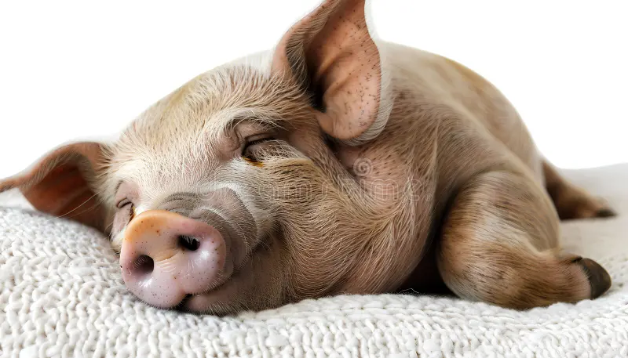
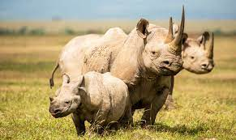
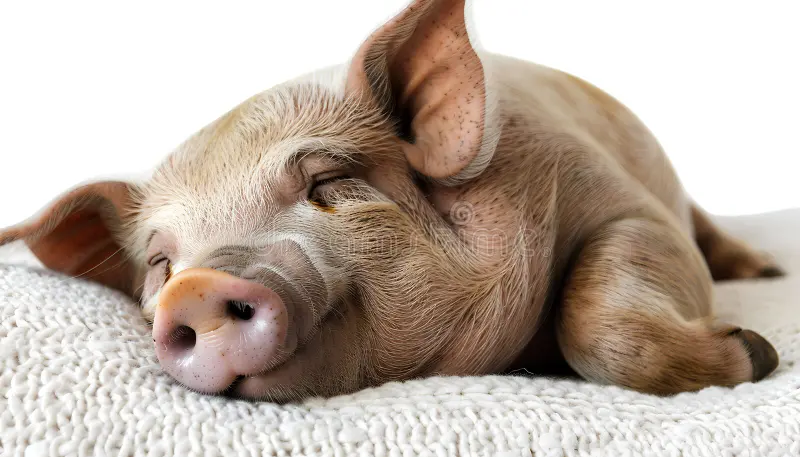
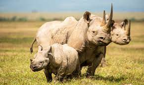
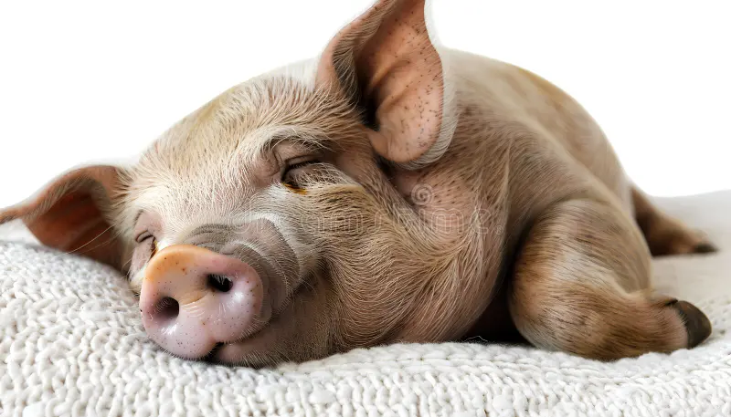
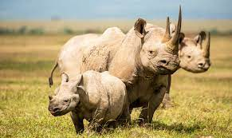
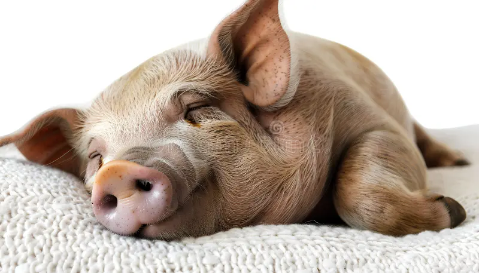
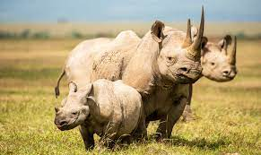

 



What is a Zoo?
A zoo (short for zoological park or zoological garden) is a facility where animals are housed, cared for,
and displayed
to the public. Zoos serve several purposes, including education, conservation, research, and recreation.
Main Purposes of a Zoo
Conservation
Zoos protect endangered species through breeding programs.
They help reintroduce animals into the wild when conditions allow.
Education
Zoos teach visitors about animal behavior, habitats, and threats to wildlife.
They raise awareness of environmental and conservation issues.
Research
Scientists study animals to understand more about behavior, health, genetics, and reproduction.
This research can help species in both captivity and the wild.
Recreation
Families and individuals visit zoos for entertainment and to enjoy seeing animals they wouldn’t
encounter in daily life.
Types of Zoos
Traditional Zoos – With enclosures or cages.
Safari Parks – Drive-through areas with free-roaming animals.
Aquariums – Focused on marine and freshwater species.
Petting Zoos – Allow visitors to touch and feed animals.
Sanctuaries – Rescue and rehabilitate animals, often not open to the public.
Some popular zoos in India include:
National Zoological Park, Delhi – Located in the heart of New Delhi.
Mysore Zoo – Situated in Mysuru, Karnataka.
Arignar Anna Zoological Park – Near Chennai, Tamil Nadu.
Rajiv Gandhi Zoological Park – Located in Pune, Maharashtra.
Nandankanan Zoological Park – Situated in Bhubaneswar, Odisha.
These zoos are spread across major cities and are popular destinations for families and tourists.